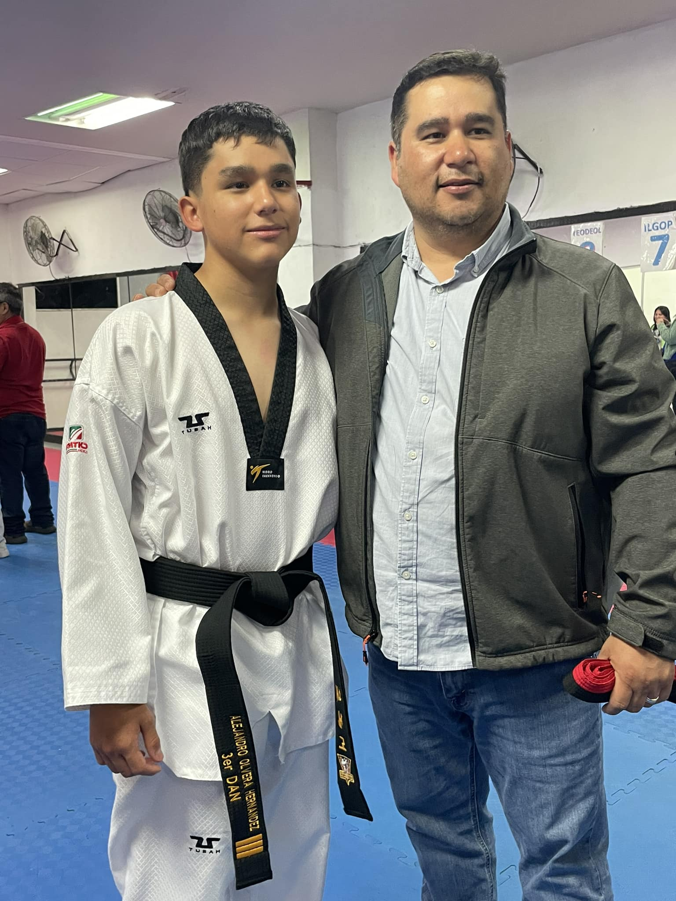
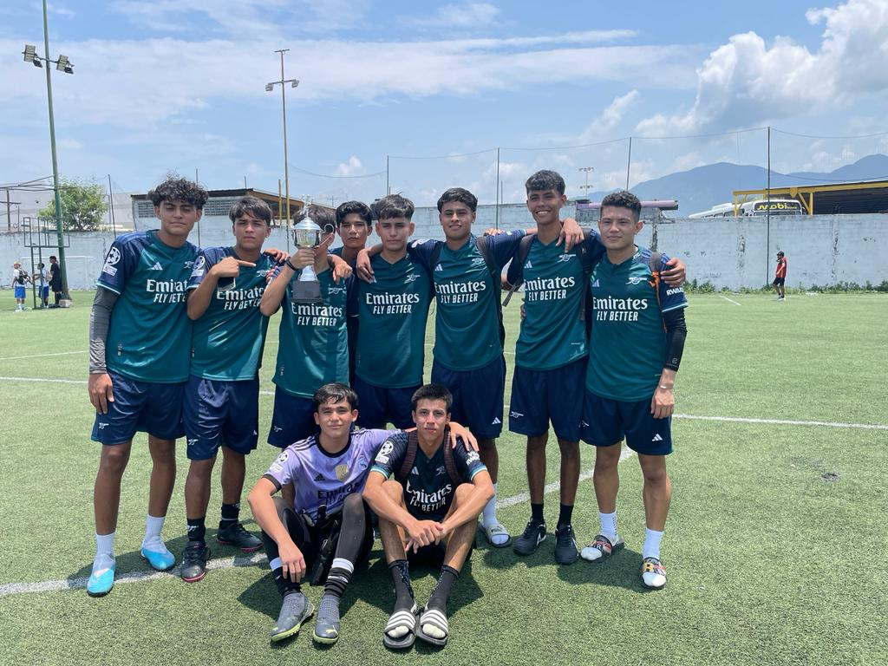
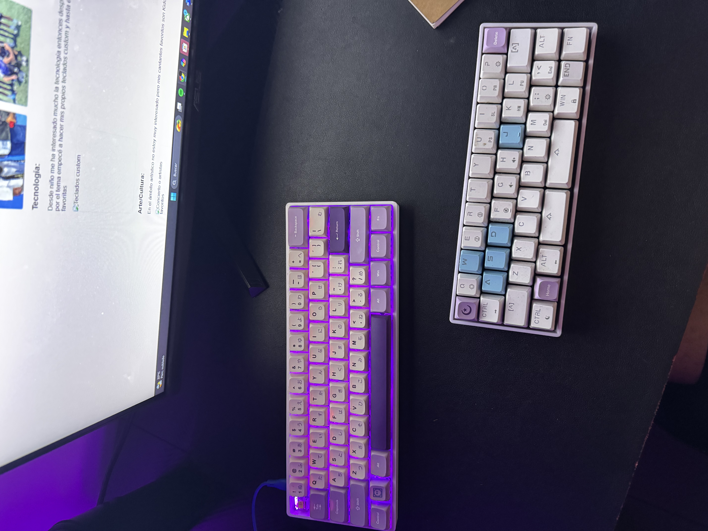
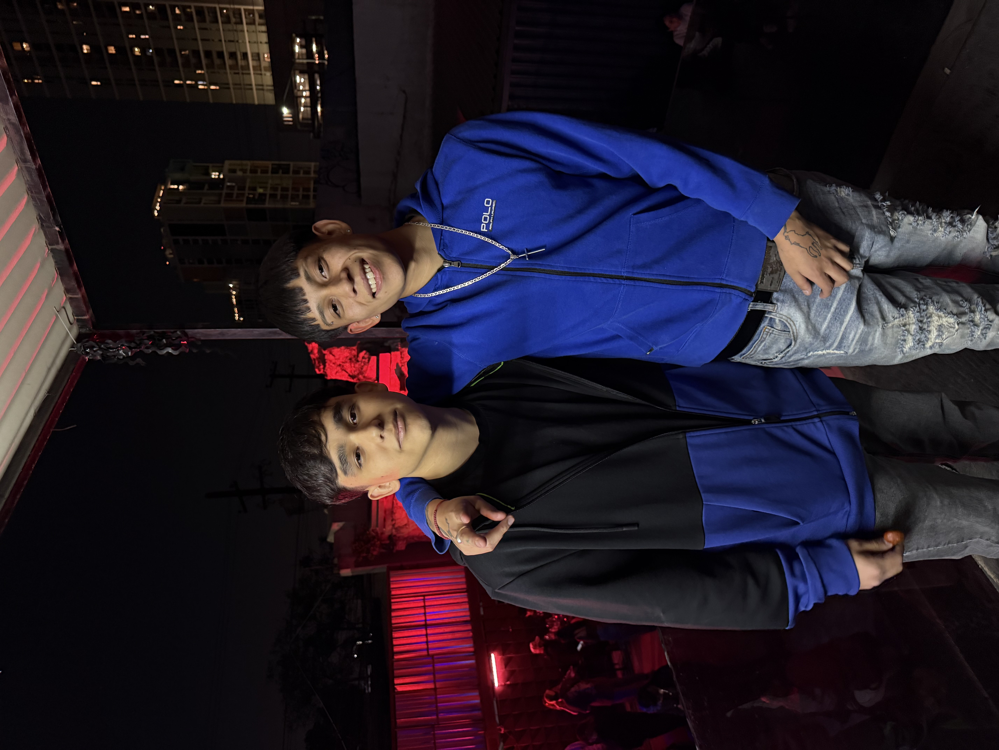
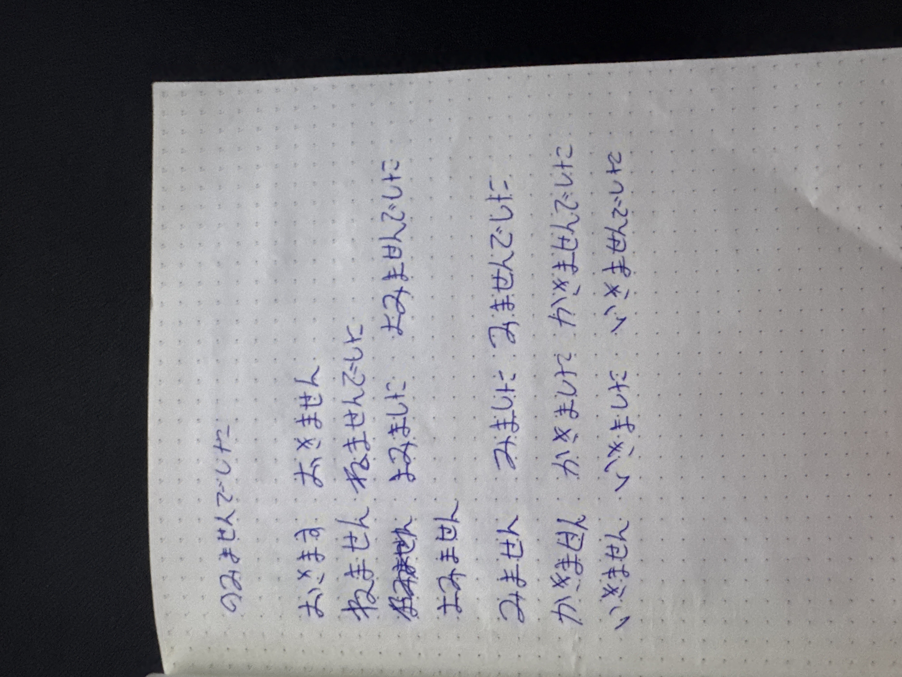

Tengo 14 años entrenando y practicando taekwondo, mi cinta actual es cinta negra 3er Dan y también juego fútbol


Desde niño me ha interesado mucho la tecnología entonces después de los 14 años gracias a mi gusto por el tema empecé a hacer mis propios teclados custom y hasta el día de hoy es una de mis actividades favoritas

En el ámbito artístico no estoy muy interesado pero mis cantantes favoritos son Kidd Keo, Ober y Baby J

Disfruto mucho aprendiendo nuevos idiomas y es algo que se me facilita
